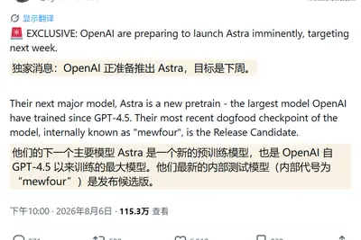
模型與研究AI 每日新聞彙整
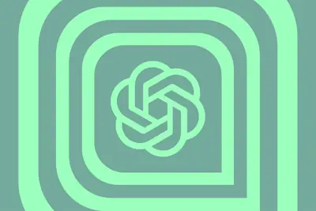
產品與應用全部主題
模型與研究
重點astragpt-4.54.5
OpenAI 傳最快下周推出 Astra 模型，內部代號 mewfour
爆料指出 OpenAI 目標下周發布 Astra 模型，內部代號 mewfour，是自 GPT-4.5 以來訓練規模最大的全新預訓練模型。據傳內部版本已解出 10 道重要開放數學問題，該模型主打組織與協調 AI 代理，適合長週期、高難度推理與協作工作流。
重點predicthurricanesearlier
DeepMind 稱其 AI 模型 WeatherNext 能更早預測颶風路徑與強度
DeepMind 宣布其 WeatherNext 天氣模型可利用較低解析度的氣象資料，更早且準確地預測颶風路徑與強度，模型將開源釋出。不過研究人員尚未完全理解模型為何有此表現。
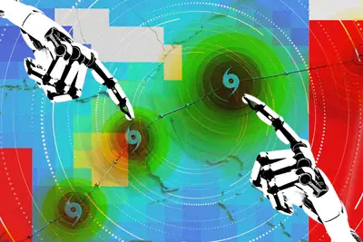
largegenomeused
研究人員以大型基因體模型 AI 設計新型噬菌體病毒
Ars Technica 報導，研究團隊運用大型基因體模型 AI 系統，設計出與原始版本基因差異極大的新型噬菌體（可殺死細菌的病毒），展現 AI 在合成生物學的應用潛力。
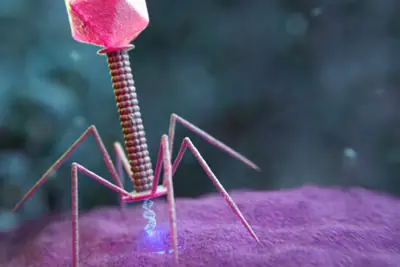
- Ars Technica AI Large genome models used to design new viruses
urlhttpscomments
Qwen3.8 Max 登頂代理能力榜，AI 代理指令審核研究引關注
阿里 Qwen3.8 Max 在 Artificial Analysis 的代理能力指數（agentic index）中名列第一，成為目前綜合表現最佳的模型。另一項研究則指出，在 4 萬次遊戲代理指令測試中，人類審核者漏掉了三分之一的安全威脅，凸顯 AI 代理權限管理的風險。
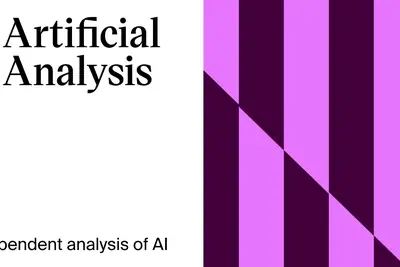
- Hacker News (100+) Qwen3.8 Max now ranked as the best overall model by agentic index
- Hacker News (100+) Humans missed 1 in 3 threats approving AI agent commands across 40k game runs
achievesbreakthroughforecasting
Google DeepMind 以 WeatherNext 模型提升熱帶氣旋預報能力
Google DeepMind 發布 WeatherNext 模型，在熱帶氣旋預報上取得突破。該模型運用 AI 技術提升對颶風、颱風等劇烈天氣系統的預測準確度，有助於防災決策與早期預警。
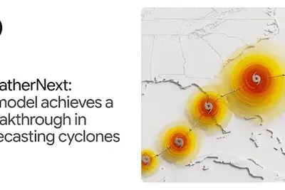
產品與應用
4 家媒體報導freeuserschatgpt
OpenAI 開放 ChatGPT 免費用戶無限文字聊天，並升級 GPT-5.6 模型
OpenAI 宣布下週起取消 ChatGPT 免費版與 Go 版的文字聊天額度限制，免費用戶將可使用 GPT-5.6 Luna 進行日常對話，並新增用於複雜查詢的「think」按鈕；付費用戶則可使用準確度與一致性提升的 GPT-5.6 Sol。此舉被視為 OpenAI 擴大免費用戶存取範圍、強化模型體驗的重要更新。
- TechCrunch AI ChatGPT brings unlimited text chats to free users
- The Verge AI OpenAI is giving ChatGPT free users unlimited text chats
- ZDNet AI Taught by AI pioneers, Stanford's free online course takes you far beyond ChatGPT
- OpenAI Improving GPT‑5.6 Sol in ChatGPT—and expanding access to GPT-5.6 Luna for free users
3 家媒體報導metacodemuse
Meta 推出程式代理 Muse Code，以低價與資料換折扣挑戰 Claude Code
Meta 推出終端機 AI 程式代理 Muse Code，搭配模型 Muse Spark 1.2，強調可長時間自主運作並提供完整執行紀錄。其最低方案 token 單價僅約標準層十分之一，比 DeepSeek 等對手更便宜，但代價是須授權 Meta 將使用者的程式碼與提示用於訓練下一代模型，瞄準在意帳單勝過資料主權的開發者。
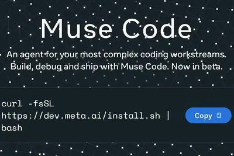
2 家媒體報導smartspeakerreportedly
OpenAI 與 Jony Ive 合作的首款 AI 裝置傳為圓餅型智慧音箱，售價逾 300 美元
根據 Bloomberg 記者 Mark Gurman 報導，OpenAI 與前 Apple 設計師 Jony Ive 合作開發的首款 AI 裝置，外型為電池供電、甜甜圈狀、約曲棍球大小的智慧音箱，無螢幕，預計 2027 年上市，售價超過 300 美元。該裝置被定位為「沒有螢幕的智慧音箱」，將展現獨特外觀設計。
2 家媒體報導adobeuseleaving
Adobe 插件進駐 ChatGPT，用戶可一鍵呼叫 70 多款創意工具
Adobe 與 OpenAI 擴大合作，於 ChatGPT 推出涵蓋 Photoshop、Premiere、Lightroom、Illustrator、InDesign 等 70 多款工具的 Adobe 插件。用戶在 ChatGPT 設定中安裝插件後，於提示詞輸入「@Adobe」加上任務描述，即可直接呼叫對應工具，並與 OpenAI 的 Codex 編程應用及 Work 套件搭配使用。
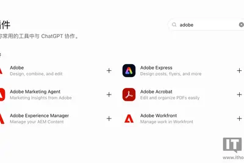
2 家媒體報導mapsfeaturesfood
Google Maps 升級代理功能，新增餐廳訂餐與飯店預訂服務
Google 為 Maps 推出多項代理式（agentic）新功能，讓使用者能用更少步驟完成餐廳訂餐與飯店預訂等真實世界任務。Google 將 Maps 從導航工具轉型為能協助使用者完成日常任務的智慧助理，反映其將 AI 代理融入核心產品的策略。
gpt-5.65.6sol
OpenAI 升級 ChatGPT 免費用戶預設模型為 GPT-5.6 Luna
OpenAI 宣布 ChatGPT 免費與 Go 用戶的預設模型升級為 GPT-5.6 Luna，下週起全面開放無限次文字聊天；Plus 與 Pro 用戶則在聊天介面更新 GPT-5.6 Sol，並新增可調節回覆思考深度的滑桿。GPT-5.6 Sol 僅限常規對話介面使用，不影響 Work 與 Codex 功能。
115.8hockeypuck
古爾曼爆料 OpenAI 首款 AI 硬體：甜甜圈造型冰球大小，估 2027 年推出
彭博記者 Mark Gurman 透露，OpenAI 與前蘋果設計師 Jony Ive 合作開發首款 AI 硬體，造型為甜甜圈形、體積約一顆冰球（115.8 立方公分），定位為無螢幕的家用智慧音箱，售價預估 300 至 400 美元，預計 2027 年發表。
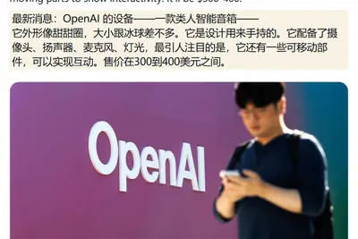
2 家媒體報導arenpeopleagents
業界反思 AI 代理設計：應以消費者需求為本，Cloudflare 開源 vibe-coding 平台
Wired 報導指出，科技業逐漸意識到 AI 代理應根據一般消費者的需求來打造，而非僅追求模型能力。Ars Technica 則報導 Cloudflare 將內部用於員工的 AI 代理工作區開源釋出，讓非程式設計師也能透過 vibe-coding 方式使用 AI 代理，呼應業界對普及化代理工具的重視。
pixelgoogleseries
Google 將發表 Pixel 11 系列手機，傳售價上漲但主打軟體價值
Google 預計於 Made by Google 2026 活動發表 Pixel 11 系列。根據 ZDNet 整理的洩漏資訊，新機硬體變化不大但仍有值得期待的更新，售價可能較前代提高。Google 仍主打軟體體驗作為與 Samsung Galaxy 系列競爭的差異化賣點。
- ZDNet AI Made by Google 2026: How to watch and what to expect from the big Pixel 11 event
- ZDNet AI Google's new Pixel 11 series comes next week - here's what we know from leaks
- ZDNet AI Is the new (pricier) Pixel 11 series still a good value compared to Samsung's Galaxy phones?
- ZDNet AI The new Pixel 11 isn't enough to make me give up my Pixel 9 Pro - here's why
datingappsditto
Z 世代交友 App Ditto 捨棄滑卡，改推 AI 媒合配對
TechCrunch 報導，Z 世代對滑卡式交友 App 感到失望，新興平台 Ditto 等改用 AI 配對機制取代傳統滑卡操作，試圖找回使用者對線上交友的興趣。
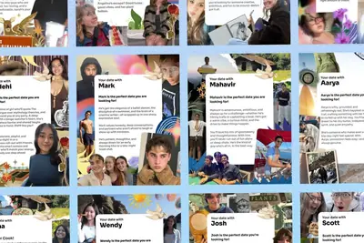
macbookairlowest
M5 MacBook Air 創官方漲價後最低價，亞馬遜折扣開賣
蘋果官方調漲 M5 MacBook Air 售價後，亞馬遜隨即出現 13 吋新機的最低折扣價，成為目前入手最便宜的管道。
659modeltesla
特斯拉中國開賣 Model Y 專用充氣床墊，售價 659 元
特斯拉中國在 Tesla App 及小程序上架 Model Y 專用單人充氣床墊，售價 659 元人民幣，採用 TPU 彈力布與 8 公分高密度 PU 泡棉，可搭配氣泵快速充放氣並收納於後車廂下層，但 Model Y L 不適用。
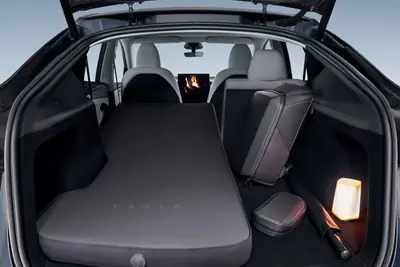
企業與資金
重點4 家媒體報導deepmindhassabisgoogle
Google AI 高層大改組：Hassabis 轉任主席、27 年元老 Jeff Dean 離職創業
Alphabet 宣布 Google DeepMind 執行長 Demis Hassabis 卸任日常職務，轉任 DeepMind 董事長及 Alphabet 首席科學家，專注 AGI 與科學研究；技術長 Koray Kavukcuoglu 升任資深副總裁接手營運。與此同時，在 Google 任職 27 年的首席科學家 Jeff Dean 與 Sanjay Ghemawat、Quoc Le 等資深人才離職，共同創辦公益型新公司 Discovery Loop，加速 AI 前沿研究。消息傳出後 Alphabet 股價下跌約 4%。
regulationbytedancetiktok
字節跳動張一鳴內部表態：不走模型蒸餾捷徑
字節跳動創辦人張一鳴在內部會議明確指出，不會以模型蒸餾作為提升 AI 能力的捷徑，即便這可能使其大型語言模型短期內落後於中國競爭對手。此決策被解讀為考量美國監管環境對 TikTok 營運的保護。

- DIGITIMES 考量美國監管保護TikTok營運 字節跳動摒棄模型蒸餾
軟銀布局 AI 訓練資料授權，改寫生成式 AI 遊戲規則
生成式 AI 快速發展，各國持續討論模型訓練是否涉及著作權侵害，資料來源合法性成為企業導入 AI 的重點。軟銀積極布局 AI 訓練資料授權模式，被視為可能改寫產業遊戲規則的關鍵動作。
- 科技新報 TechNews AI 訓練資料進入授權時代：軟銀如何改寫生成式 AI 的遊戲規則？
raisesfundingautomate
Naïve 獲 2,850 萬美元、Omilia 完成 6,700 萬美元 B 輪融資
Naïve 宣布完成 2,850 萬美元融資，主打以 vibe-coding 延伸的自動化基礎設施，協助企業完成設立與營運的繁瑣工作。客服自動化平台 Omilia 則完成 6,700 萬美元 B 輪融資，ARR 較 2020 年成長 10 倍至 6,000 萬美元。
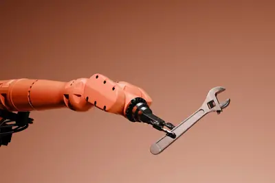
晶片與基礎設施
重點4 家媒體報導anthropicclaudehardware
Anthropic 首度證實自研 AI 晶片，為 Claude 設計專屬硬體
Anthropic 於 8 月 5 日向媒體證實，已成立內部客製化晶片團隊，著手為 Claude 模型設計專屬 AI 晶片，採取軟硬體協同設計策略以提升效率與降低成本。Anthropic 強調這是其多晶片策略的一環，將持續與 AWS、Google、NVIDIA、AMD 等既有夥伴合作，並同步開出 8 大領域職缺，矽晶團隊年薪上限達 48.5 萬美元。
- Ars Technica AI Anthropic will design its own hardware to power Claude
- iThome Anthropic成立自研晶片團隊，為Claude設計AI晶片
- TechOrange 科技報橘 自研晶片卻不放棄 NVIDIA：Anthropic 為何想用軟硬體協同設計重塑 Claude 成本結構？
- INSIDE AI 巨頭瘋自製晶片！Anthropic 證實自研 AI 晶片，矽晶團隊年薪上限 48.5 萬美元、8 大領域同時開徵
重點gpuhbmrubin
傳 NVIDIA 為緩解 HBM 供應短缺，考慮降低 Rubin Ultra GPU 配置
The Information 報導，NVIDIA 為因應 HBM 記憶體供應短缺問題，內部已測試至少 3 種低 HBM 容量的 Rubin Ultra GPU 方案，所需 HBM 容量低於原公布規格，並嘗試從其他方面彌補效能損失。TrendForce 與韓國券商分析亦指出，NVIDIA 正平行評估原定 12Hi HBM4E 以外的替代方案。此外，NVIDIA 在 Black Hat 大會開源 cuFile API，研發以 SSD 充當額外顯存的新技術以改善遊戲與 AI 場景表現。
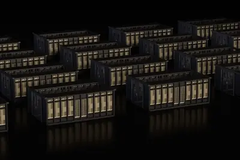
重點terafabspacexxai
SpaceX 與特斯拉合資 168 億美元於德州建 Terafab AI 晶片廠
SpaceX 與特斯拉宣布首期投入 168 億美元，在德州格賴姆斯縣建設 Terafab 進階 AI 晶片製造基地，涵蓋從設計到製造的完整流程。兩家公司預估未來合計算力需求將突破 1 太瓦，遠超全球現有產能。SpaceX 同時規畫自建天然氣發電廠供電，並強調不會推高當地電費或影響水源。
重點amdhttpsacquires
AMD 收購 Taalas，盼以「刻入矽晶」技術提升 AI 推論效能
AMD 宣布收購 AI 晶片新創 Taalas，後者擅長將模型直接刻入矽晶以提升推論效能。該消息在 Hacker News 獲得近 300 點關注與 230 則討論，顯示社群對此併購高度興趣。
chiposatjcet
AI 晶片封測需求強勁，長電旗下星科金朋 2026 下半年啟動新一輪調價
AI 晶片需求持續推升封測熱度，長電科技旗下新加坡封測子公司星科金朋規劃於 2026 年下半年啟動新一波大範圍價格調整，近期已陸續通知客戶不等幅度的漲價。
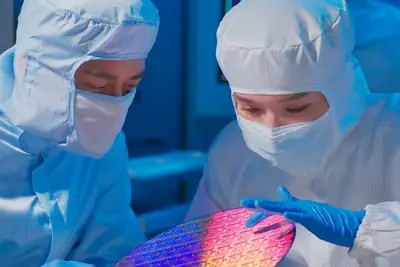
- DIGITIMES （獨家）封測因應AI強需求 長電旗下星科金朋大舉調價
2028samsungdatacenter
三星重工押注浮動資料中心，目標 2028 年第二季商轉並布局美國
三星重工宣布將於 2028 年第二季前完成首座浮動資料中心（FDC）商業化，並力拚在正式營運前取得首批訂點，同時布局美國市場。生成式 AI 帶動資料中心需求快速攀升，造船業看見全新商機。
- DIGITIMES 三星重工押注浮動資料中心 瞄準2028商轉、布局美國
giladshainernvidia
NVIDIA 與 Lightmatter 將於 OCP APAC 峰會聚焦光互連與 CPO 技術藍圖
2026 年 OCP APAC Summit 將於 8 月 11 至 12 日在台北登場，NVIDIA 網路事業資深副總裁 Gilad Shainer 將分享 AI 工廠大規模部署所需的關鍵網路架構與光互連技術。Lightmatter 執行長 Nick Harris 也將揭露 CPO（Co-Packaged Optics）技術藍圖，並強調與台灣供應鏈夥伴合作迎接「光進銅退」趨勢。
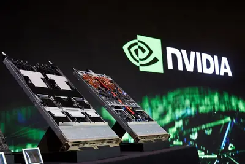
- DIGITIMES NVIDIA眼中的「光互連技術」 專訪NVIDIA網路事業副總Gilad Shainer
- DIGITIMES （專訪）Lightmatter揭CPO技術藍圖 攜台廠供應鏈夥伴迎「光進銅退」
asichbmgpu
數位時代整理台股 AI 晶片供應鏈受惠股名單
《數位時代》以黃仁勳提出的 AI 五層蛋糕為脈絡，整理台股 AI 晶片供應鏈，從 GPU、ASIC、HBM 到先進封裝與封測，分類出直接與間接受惠股清單。
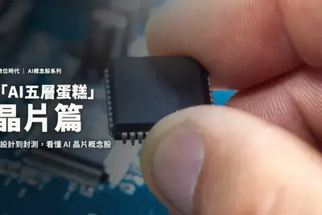
政策與法規
重點datadatacentercenter
軟銀 1 月捐 5,000 萬美元給川普圖書館，數月後宣布聯邦資料中心計畫
軟銀於今年 1 月向川普總統圖書館捐贈 5,000 萬美元，數月後即宣布租用聯邦土地在俄亥俄州興建大型資料中心。軟銀在回應參議員華倫等人的質詢時揭露了這筆捐款的時間點。同時，美國各地對資料中心的反彈聲浪升高，佛州赫南多郡已通過為期一年的興建禁令。
2 家媒體報導appletradesecrets
OpenAI 反擊 Apple 商業機密訴訟，稱蘋果自身安全措施削弱其主張
OpenAI 已向聯邦法院提交動議，請求駁回 Apple 對其提出的商業機密竊取訴訟，稱指控「毫無根據」。OpenAI 主張 Apple 自身的安全與離職員工管理措施存在瑕疵，包括允許 Apple 經理在工程師離職後仍存取其 iCloud 帳戶，削弱了 Apple 對機密保護的主張。
安全與倫理
watermarkssunohopes
Suno 計畫為 AI 生成音樂加入浮水印與下載限制以打擊濫用
AI 音樂生成平台 Suno 宣布將導入浮水印技術與下載政策，試圖遏止大規模濫用並提升透明度。執行長 Mikey Shulman 在長篇部落格文章中說明公司原則與下一步方向。
- Ars Technica AI Suno hopes to go legit with watermarks for AI-generated music
icednacollection
Wired 探討 ICE 大量收集無犯罪紀錄者 DNA、AI 反感浪潮升溫
Wired《Uncanny Valley》節目討論美國移民執法機構 ICE 大量收集無犯罪紀錄者（含兒童）DNA 並存入 FBI 資料庫的做法，同時探討近期社會對 AI 的反感情緒持續升高。
spammyplanssuno
Suno 公布打擊垃圾 AI 音樂計畫：導入浮水印與下載限制
Suno 執行長 Mikey Shulman 在部落格發文，宣布將推出浮水印技術與新的下載政策，限制垃圾 AI 音樂散布並提升透明度，試圖讓公司走向正當化。

- The Verge AI Suno shares plans to combat spammy AI music
safetyopensource
鴻璟以 13 億筆病毒資料庫對抗 AI 變種攻擊
生成式 AI 普及讓駭客得以產製複雜變種病毒，傳統防護機制疲於奔命。鴻璟以「AI 雙向策略」搭配 22 年自建、規模達 13 億筆的病毒資料庫，重構 AI 時代的邊緣資安防禦網。
- DIGITIMES AI激化駭客攻擊 鴻璟靠雙向策略以13億數據庫築資安高牆
開源社群
arm649.2proxmox
Proxmox VE 9.2 首次支援 Arm64 架構，脫離 x86 獨占
開源虛擬化平台 Proxmox Virtual Environment 推出 9.2 版，基於 Debian 13.5 與 Linux 核心 7.0，首次正式支援 Arm64/aarch64 架構，首發支援 NVIDIA Grace Hopper 與 Vera CPU 平台，並與 NVIDIA、Supermicro 合作開發。
其他
富比士專欄：AI 時代企業最難複製的是「品味」
《富比士》專欄指出，企業加速導入 AI 後，傳統競爭優勢如軟體、設計與文件都更容易被複製。AI 時代真正難以取代的關鍵資產已轉移至企業的「品味」等難以複製的軟實力。
- 科技新報 TechNews AI 轉型的關鍵資產戰場已轉移，最難複製的「企業品味」是什麼？
travelgadgetsexperts
ZDNet 整理專家推薦的 6 款旅行必備 3C 配件
ZDNet 邀請多位旅遊業專家分享他們在旅途中最依賴的 3C 配件，整理出 6 款必備好物清單。
oledimpressive700
LG C6 OLED 電視在 Best Buy 降價 700 美元
LG 旗艦 OLED 電視 C6 的 65 吋版本在 Best Buy 推出 26% 折扣，折價約 700 美元。此為 ZDNet 評測中表現優異的年度旗艦機型之一。
foldaccessoriesgalaxy
Galaxy Z Fold 8 搭配兩款配件提升使用體驗
ZDNet 編輯以 Galaxy Z Fold 8 作為主力機使用兩週，推薦兩款必備配件，其中一款非三星原廠出品，可完善折疊手機的日常使用體驗。